Tarihte Yaşanan Önemli Olaylar
1. Doğu (Ortodoks) ve Batı (Katolik) kiliselerinin birbirinden ayrılması. (1054)
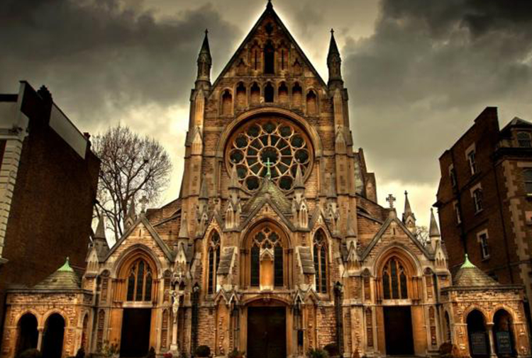
2. İtalya Bologna'da ilk üniversitenin açılması. (1088)
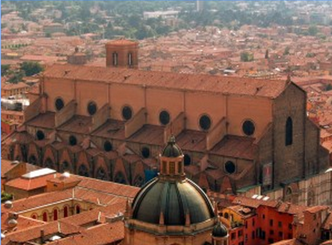
3. Cengiz Han'ın Asya'yı Fethi. (1206)
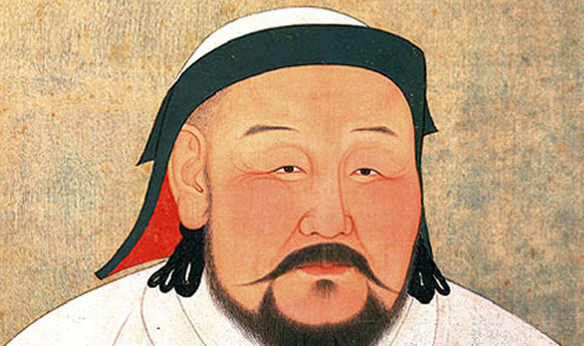
4. Magna Carta'nın İngiltere Kralı tarafından imzalanması. (1215)
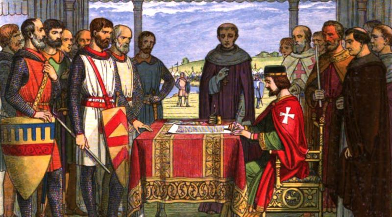
5. İstanbul'un Fethi. (1453)
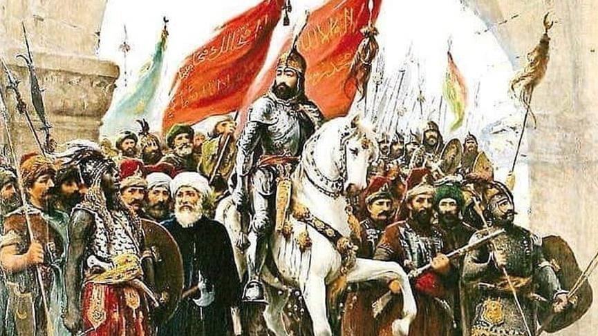
6. Modern matbaacılığın doğuşu. (1455)
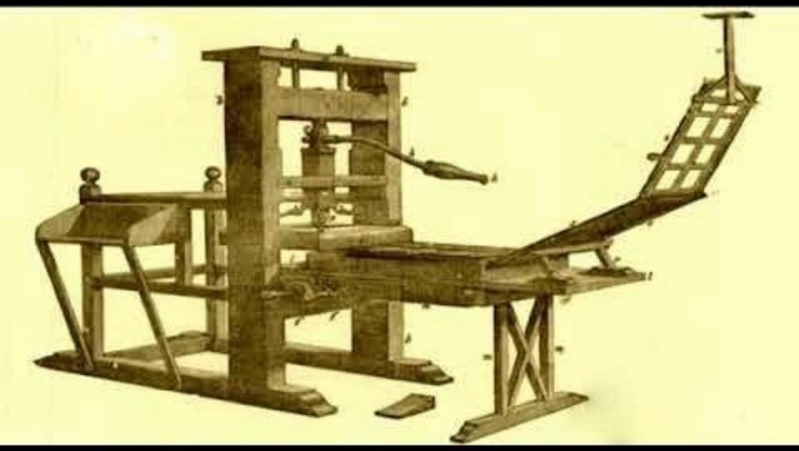
7. Christoph Colomb'un Amerika'yı keşfi. (1492)
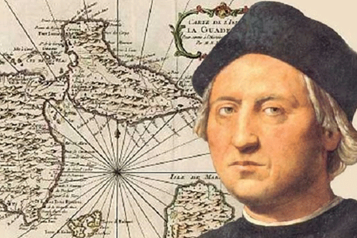
8. Saatin İcadı. (1509)
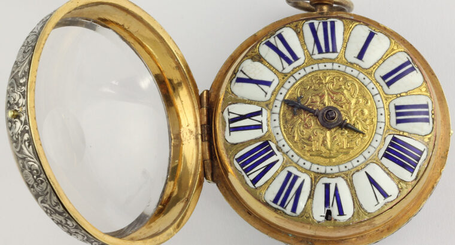
9. Martin Luther tarafından Reform hareketlerinin başlatılması. (1517)
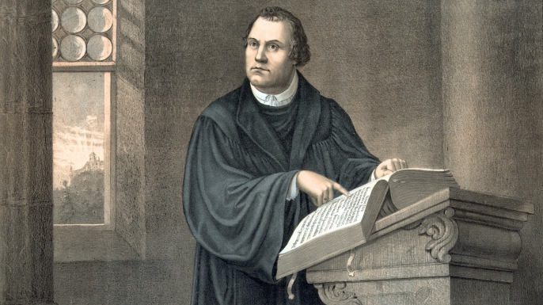
10. Cortes tarafından Güney Amerika'nın işgali. (1519)
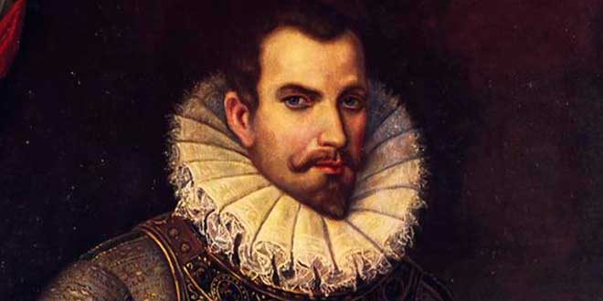
11. William Shakespeare'in doğumu. (1564)
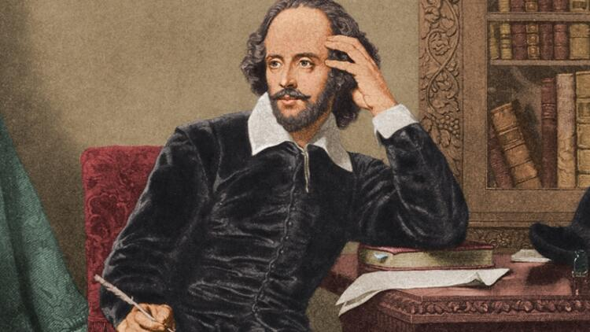
12. Thomas Hobbes'un kitabı Leviathan'ın yayımlanması. (1651)
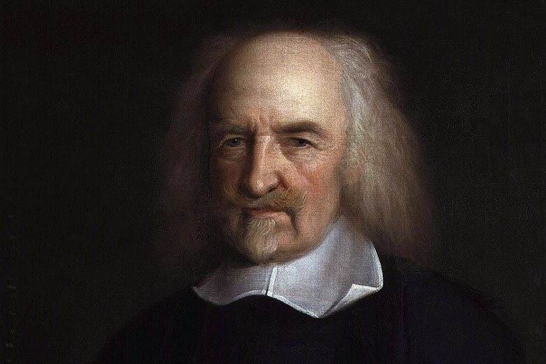
13. Isaac Newton'un kitabı Principia Mathematica'nın yayımlanması ve modern fiziğin doğuşu. (1687)
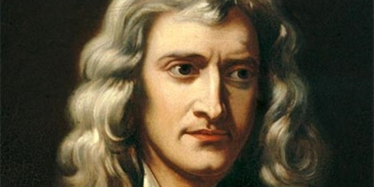
14. Amerikan Bağımsızlık Bildirgesi'nin yayımlanması. (1776)
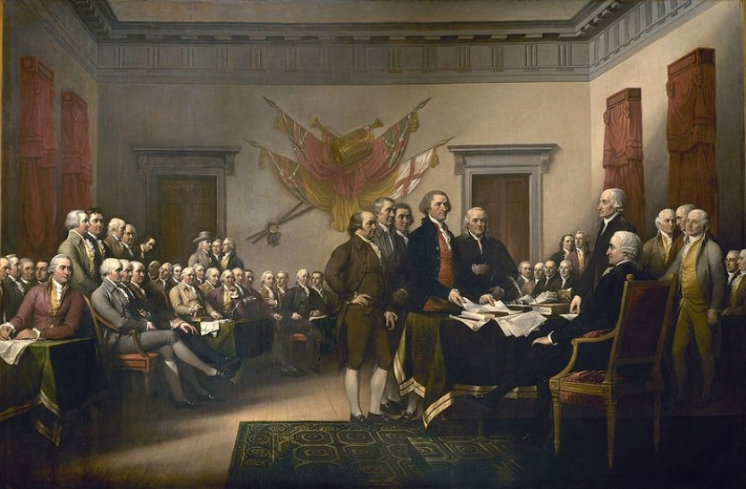
15. Fransız Devrimi. (1789)
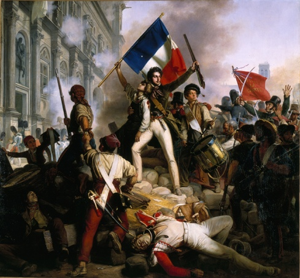
16. Waterloo Savaşı: Napolyon'un Avrupa'yı yönetme hayali son buldu. (1815)
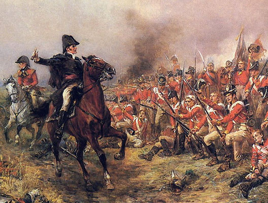
17. İlk Buharlı Lokomotif'in kullanımı. (1825)

18. Charles Darwin'in Türlerin Kökeni adlı kitabı yayımlandı. (1859)
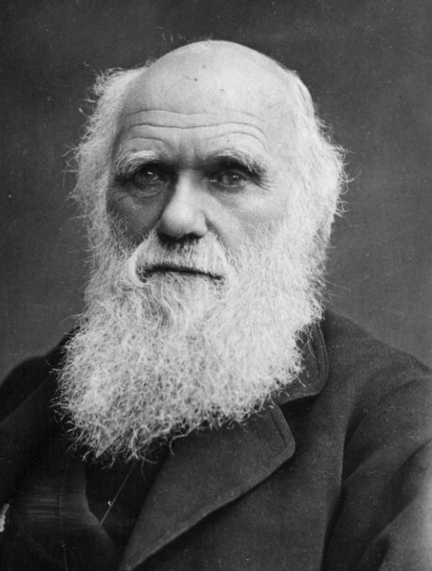
19. ABD'de Köleliğin kaldırılması. (1863)
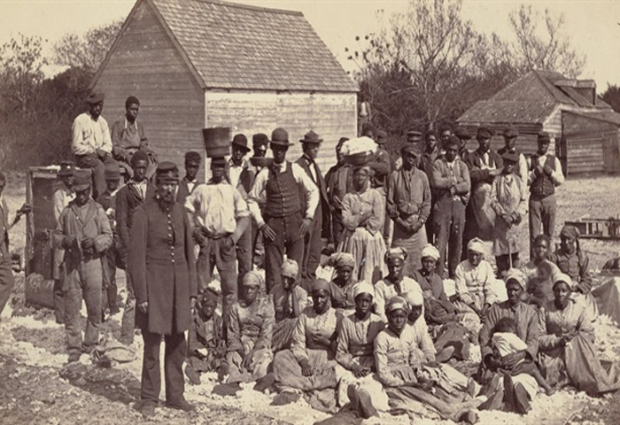
20. Benz tarafından benzin ile çalışan ilk otomobilin üretilmesi. (1885)
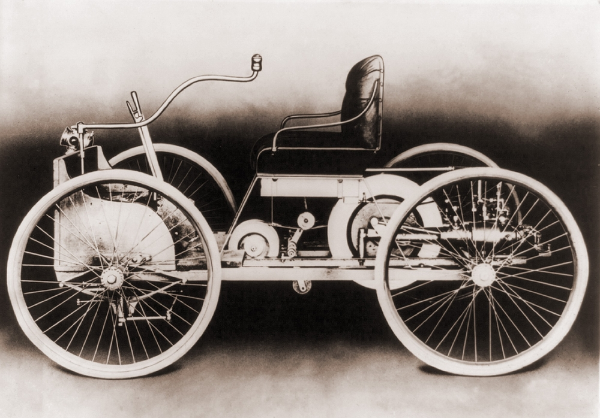
21. Yeni Zelanda'da kadınların seçim hakkı elde etmesi. (1893)
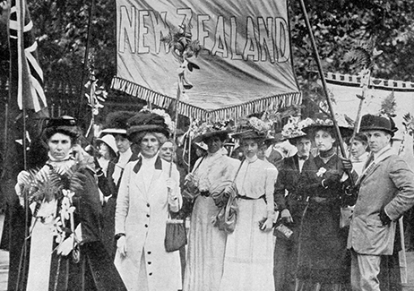
22. Einstein'in "Özel Görelilik Kuramı"nın yayımlanması. (1905)
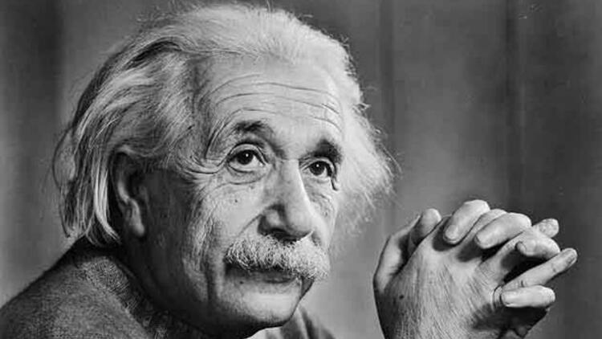
23. Rus Devrimi. (1917)
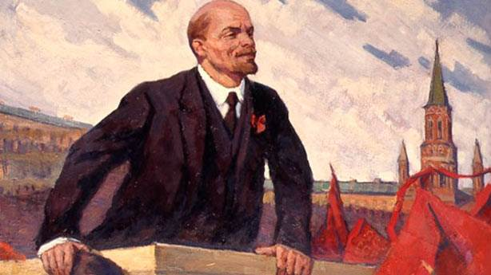
24. I. Dünya Savaşı'nın Sonu. Avrupa ve Ortadoğu'da haritanın yeniden şekillenmesi. (1918)
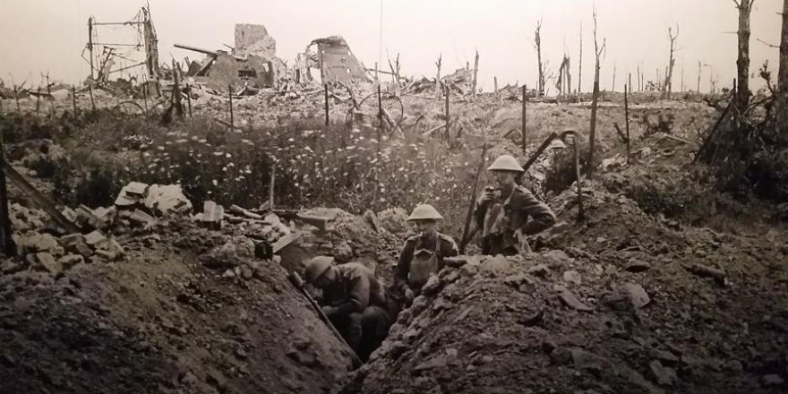
>
25. II. Dünya Savaşı'nın patlak vermesi. (1939)
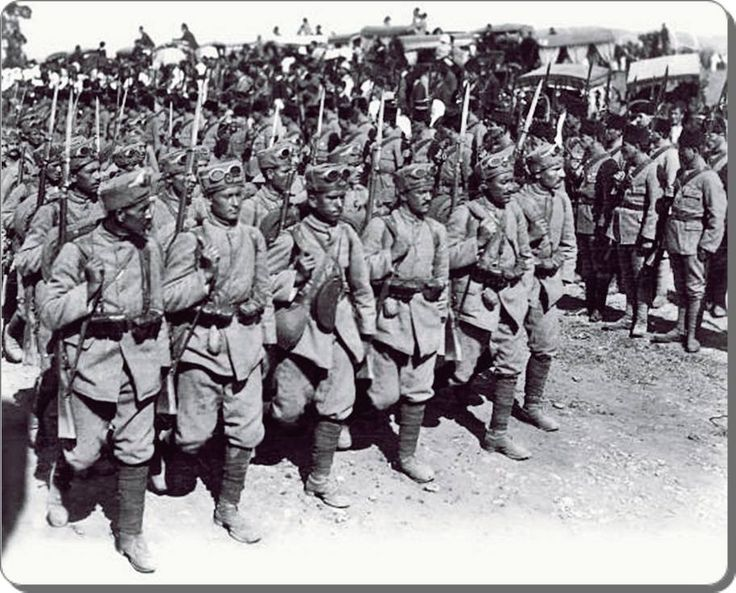
26. Hiroşima ve Nagasaki'ye Atom Bombası saldırısı. (1945)
27. Komünist Çin'in kurulması. (1949)
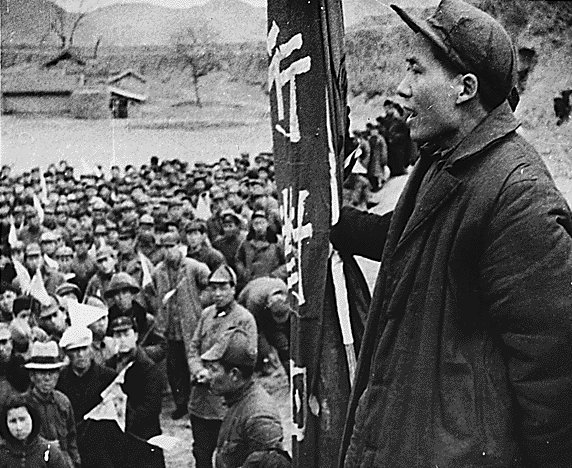
28. Silikon Çip'in icadı. (1959)
29. Berlin Duvarı'nın yıkılması (1989)
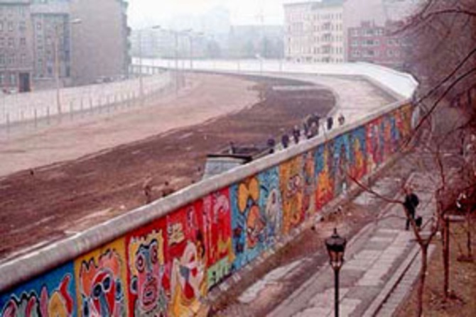
30. Avrupa'da Komünist rejimin çökmesi. (1989 - 1990)
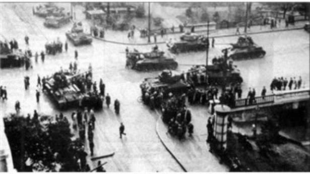